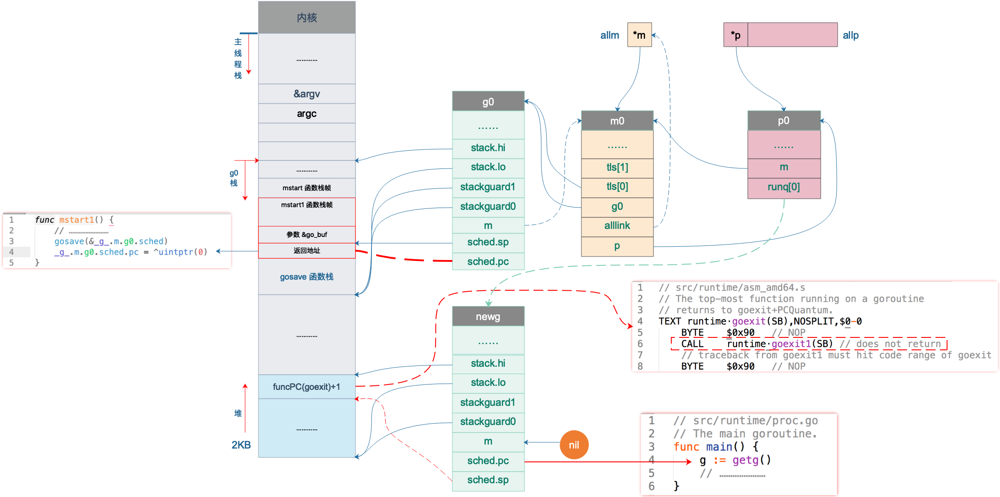
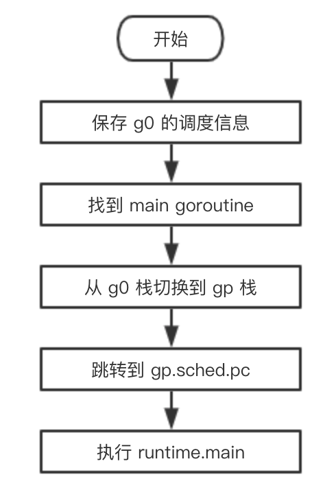

上一讲新创建了一个 goroutine，设置好了 sched 成员的 sp 和 pc 字段，并且将其添加到了 p0 的本地可运行队列，坐等调度器的调度。
我们继续看代码。搞了半天，我们其实还在 runtime·rt0_go 函数里，执行完 runtime·newproc(SB) 后，两条 POP 指令将之前为调用它构建的参数弹出栈。好消息是，最后就只剩下一个函数了：
1
2
3
|
// start this M
// 主线程进入调度循环，运行刚刚创建的 goroutine
CALL runtime·mstart(SB)
|
这到达了本系列的核心区，前面铺垫了半天，调度器终于要开始运转了。
mstart 函数设置了 stackguard0 和 stackguard1 字段后，就直接调用 mstart1() 函数：
1
2
3
4
5
6
7
8
9
10
11
12
13
14
15
16
17
18
19
20
21
22
23
24
25
26
27
28
29
30
31
32
33
34
35
36
37
|
func mstart1() {
// 启动过程时 _g_ = m0.g0
_g_ := getg()
if _g_ != _g_.m.g0 {
throw("bad runtime·mstart")
}
// Record top of stack for use by mcall.
// Once we call schedule we're never coming back,
// so other calls can reuse this stack space.
//
// 一旦调用 schedule() 函数，永不返回
// 所以栈帧可以被复用
gosave(&_g_.m.g0.sched)
_g_.m.g0.sched.pc = ^uintptr(0) // make sure it is never used
asminit()
minit()
// ……………………
// 执行启动函数。初始化过程中，fn == nil
if fn := _g_.m.mstartfn; fn != nil {
fn()
}
if _g_.m.helpgc != 0 {
_g_.m.helpgc = 0
stopm()
} else if _g_.m != &m0 {
acquirep(_g_.m.nextp.ptr())
_g_.m.nextp = 0
}
// 进入调度循环。永不返回
schedule()
}
|
调用 gosave 函数来保存调度信息到 g0.sched 结构体，来看源码：
1
2
3
4
5
6
7
8
9
10
11
12
13
14
15
16
17
18
19
20
21
22
23
24
25
26
|
// void gosave(Gobuf*)
// save state in Gobuf; setjmp
TEXT runtime·gosave(SB), NOSPLIT, $0-8
// 将 gobuf 赋值给 AX
MOVQ buf+0(FP), AX // gobuf
// 取参数地址，也就是 caller 的 SP
LEAQ buf+0(FP), BX // caller's SP
// 保存 caller's SP，再次运行时的栈顶
MOVQ BX, gobuf_sp(AX)
MOVQ 0(SP), BX // caller's PC
// 保存 caller's PC，再次运行时的指令地址
MOVQ BX, gobuf_pc(AX)
MOVQ $0, gobuf_ret(AX)
MOVQ BP, gobuf_bp(AX)
// Assert ctxt is zero. See func save.
MOVQ gobuf_ctxt(AX), BX
TESTQ BX, BX
JZ 2(PC)
CALL runtime·badctxt(SB)
// 获取 tls
get_tls(CX)
// 将 g 的地址存入 BX
MOVQ g(CX), BX
// 保存 g 的地址
MOVQ BX, gobuf_g(AX)
RET
|
主要是设置了 g0.sched.sp 和 g0.sched.pc，前者指向 mstart1 函数栈上参数的位置，后者则指向 gosave 函数返回后的下一条指令。如下图：

图中 sched.pc 并不直接指向返回地址，所以图中的虚线并没有箭头。
接下来，进入 schedule 函数，永不返回。
1
2
3
4
5
6
7
8
9
10
11
12
13
14
15
16
17
18
19
20
21
22
23
24
25
26
27
28
29
30
31
32
33
34
35
36
37
38
39
40
41
42
43
44
45
46
47
48
49
50
51
52
53
54
55
56
57
58
59
60
61
62
63
|
// 执行一轮调度器的工作：找到一个 runnable 的 goroutine，并且执行它
// 永不返回
func schedule() {
// _g_ = 每个工作线程 m 对应的 g0，初始化时是 m0 的 g0
_g_ := getg()
// ……………………
top:
// ……………………
var gp *g
var inheritTime bool
// ……………………
if gp == nil {
// Check the global runnable queue once in a while to ensure fairness.
// Otherwise two goroutines can completely occupy the local runqueue
// by constantly respawning each other.
// 为了公平，每调用 schedule 函数 61 次就要从全局可运行 goroutine 队列中获取
if _g_.m.p.ptr().schedtick%61 == 0 && sched.runqsize > 0 {
lock(&sched.lock)
// 从全局队列最大获取 1 个 goroutine
gp = globrunqget(_g_.m.p.ptr(), 1)
unlock(&sched.lock)
}
}
// 从 P 本地获取 G 任务
if gp == nil {
gp, inheritTime = runqget(_g_.m.p.ptr())
if gp != nil && _g_.m.spinning {
throw("schedule: spinning with local work")
}
}
if gp == nil {
// 从本地运行队列和全局运行队列都没有找到需要运行的 goroutine，
// 调用 findrunnable 函数从其它工作线程的运行队列中偷取，如果偷不到，则当前工作线程进入睡眠
// 直到获取到 runnable goroutine 之后 findrunnable 函数才会返回。
gp, inheritTime = findrunnable() // blocks until work is available
}
// This thread is going to run a goroutine and is not spinning anymore,
// so if it was marked as spinning we need to reset it now and potentially
// start a new spinning M.
if _g_.m.spinning {
resetspinning()
}
if gp.lockedm != nil {
// Hands off own p to the locked m,
// then blocks waiting for a new p.
startlockedm(gp)
goto top
}
// 执行 goroutine 任务函数
// 当前运行的是 runtime 的代码，函数调用栈使用的是 g0 的栈空间
// 调用 execute 切换到 gp 的代码和栈空间去运行
execute(gp, inheritTime)
}
|
调用 runqget，从 P 本地可运行队列先选出一个可运行的 goroutine；为了公平，调度器每调度 61 次的时候，都会尝试从全局队列里取出待运行的 goroutine 来运行，调用 globrunqget；如果还没找到，就要去其他 P 里面去偷一些 goroutine 来执行，调用 findrunnable 函数。
经过千辛万苦，终于找到了可以运行的 goroutine，调用 execute(gp, inheritTime) 切换到选出的 goroutine 栈执行，调度器的调度次数会在这里更新，源码如下：
1
2
3
4
5
6
7
8
9
10
11
12
13
14
15
16
17
18
19
20
21
22
23
24
25
26
27
28
29
30
31
32
|
// 调度 gp 在当前 M 上运行
// 如果 inheritTime 为真，gp 执行当前的时间片
// 否则，开启一个新的时间片
//
//go:yeswritebarrierrec
func execute(gp *g, inheritTime bool) {
// g0
_g_ := getg()
// 将 gp 的状态改为 running
casgstatus(gp, _Grunnable, _Grunning)
gp.waitsince = 0
gp.preempt = false
gp.stackguard0 = gp.stack.lo + _StackGuard
if !inheritTime {
// 调度器调度次数增加 1
_g_.m.p.ptr().schedtick++
}
// 将 gp 和 m 关联起来
_g_.m.curg = gp
gp.m = _g_.m
// …………………………
// gogo 完成从 g0 到 gp 真正的切换
// CPU 执行权的转让以及栈的切换
// 执行流的切换从本质上来说就是 CPU 寄存器以及函数调用栈的切换，
// 然而不管是 go 还是 c 这种高级语言都无法精确控制 CPU 寄存器的修改，
// 因而高级语言在这里也就无能为力了，只能依靠汇编指令来达成目的
gogo(&gp.sched)
}
|
将 gp 的状态改为 _Grunning，将 m 和 gp 相互关联起来。最后，调用 gogo 完成从 g0 到 gp 的切换，CPU 的执行权将从 g0 转让到 gp。 gogo 函数用汇编语言写成，原因如下：
gogo 函数也是通过汇编语言编写的，这里之所以需要使用汇编，是因为 goroutine 的调度涉及不同执行流之间的切换。
前面我们在讨论操作系统切换线程时已经看到过，执行流的切换从本质上来说就是 CPU 寄存器以及函数调用栈的切换，然而不管是 go 还是 c 这种高级语言都无法精确控制 CPU 寄存器，因而高级语言在这里也就无能为力了，只能依靠汇编指令来达成目的。
继续看 gogo 函数的实现，传入 &gp.sched 参数，源码如下：
1
2
3
4
5
6
7
8
9
10
11
12
13
14
15
16
17
18
19
20
21
22
23
24
25
26
27
28
29
30
31
32
33
|
TEXT runtime·gogo(SB), NOSPLIT, $16-8
// 0(FP) 表示第一个参数，即 buf = &gp.sched
MOVQ buf+0(FP), BX // gobuf
// ……………………
MOVQ buf+0(FP), BX
nilctxt:
// DX = gp.sched.g
MOVQ gobuf_g(BX), DX
MOVQ 0(DX), CX // make sure g != nil
get_tls(CX)
// 将 g 放入到 tls[0]
// 把要运行的 g 的指针放入线程本地存储，这样后面的代码就可以通过线程本地存储
// 获取到当前正在执行的 goroutine 的 g 结构体对象，从而找到与之关联的 m 和 p
// 运行这条指令之前，线程本地存储存放的是 g0 的地址
MOVQ DX, g(CX)
// 把 CPU 的 SP 寄存器设置为 sched.sp，完成了栈的切换
MOVQ gobuf_sp(BX), SP // restore SP
// 恢复调度上下文到CPU相关寄存器
MOVQ gobuf_ret(BX), AX
MOVQ gobuf_ctxt(BX), DX
MOVQ gobuf_bp(BX), BP
// 清空 sched 的值，因为我们已把相关值放入 CPU 对应的寄存器了，不再需要，这样做可以少 GC 的工作量
MOVQ $0, gobuf_sp(BX) // clear to help garbage collector
MOVQ $0, gobuf_ret(BX)
MOVQ $0, gobuf_ctxt(BX)
MOVQ $0, gobuf_bp(BX)
// 把 sched.pc 值放入 BX 寄存器
MOVQ gobuf_pc(BX), BX
// JMP 把 BX 寄存器的包含的地址值放入 CPU 的 IP 寄存器，于是，CPU 跳转到该地址继续执行指令
JMP BX
|
注释地比较详细了。核心的地方是：
1
2
3
4
|
MOVQ gobuf_g(BX), DX
// ……
get_tls(CX)
MOVQ DX, g(CX)
|
第一行，将 gp.sched.g 保存到 DX 寄存器；第二行，我们见得已经比较多了，get_tls 将 tls 保存到 CX 寄存器，再将 gp.sched.g 放到 tls[0] 处。这样，当下次再调用 get_tls 时，取出的就是 gp，而不再是 g0，这一行完成从 g0 栈切换到 gp。
可能需要提一下的是，Go plan9 汇编中的一些奇怪的符号：
1
|
MOVQ buf+0(FP), BX # &gp.sched --> BX
|
FP 是个伪奇存器，前面加 0 表示是第一个寄存器，表示参数的位置，最前面的 buf 表示一个符号。关于 Go 汇编语言的一些知识，可以参考曹大在夜读上的分享和《Go 语言高级编程》的相关章节，地址见参考资料。
接下来，将 gp.sched 的相关成员恢复到 CPU 对应的寄存器。最重要的是 sched.sp 和 sched.pc，前者被恢复到了 SP 寄存器，后者被保存到 BX 寄存器，最后一条跳转指令跳转到新的地址开始执行。通过之前的文章，我们知道，这里保存的就是 runtime.main 函数的地址。
最终，调度器完成了这个值得铭记的时刻，从 g0 转到 gp，开始执行 runtime.main 函数。
用一张流程图总结一下从 g0 切换到 main goroutine 的过程：

参考资料
#
【欧神 调度循环】https://github.com/changkun/go-under-the-hood/blob/master/book/zh-cn/part2runtime/ch06sched/exec.md
【go 语言核心编程技术 调度器系列】https://mp.weixin.qq.com/s/8eJm5hjwKXya85VnT4y8Cw
【曹大 Go plan9 汇编】https://github.com/cch123/asmshare/blob/master/layout.md
【Go 语言高级编程】https://chai2010.cn/advanced-go-programming-book/ch3-asm/readme.html